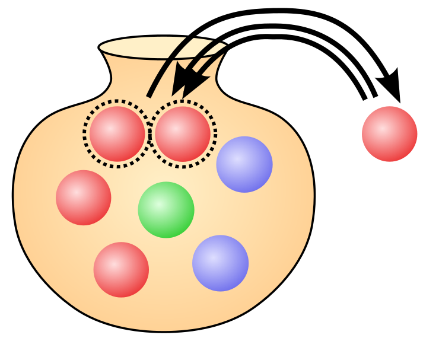

Complex Survey Design and the NIS
Brian Detweiler
April 20, 2018
About me
University of Nebraska, Omaha
B.S. Computer Science and Mathematics (2009)
M.S. Mathematics, Data Science (May, 2018)
Software Engineer (2004-present)
Flight Operations, U.S. Army National Guard (2000-2009)
A fun experiment
Step 1: Pick a random percentage. eg. 54%, 28%, 77%, etc.
Step 2: Type that number into google followed by “of Americans”
Step 3: Follow rabit hole for hours
Simple random sample
Pólya urn model
With (SRSWR) or Without Replacement (SRSWOR)
With replacement - makes use of i.i.d. assumption
Without replacement - not i.i.d. but still exchangeable
Requires access to the entire population

Sampling design
Sampling plan
Method for drawing inferences
Cell A: Vast majority of surveys
Sampling Plan
Design-based inference
Model-based inference
Probability sample
A
C
Model-dependent sample
B
D
Sampling plan
Population frame
Target population
Sampling frame
Design effects
Survey population
Population we can actually sample under the survey design
Complex Sampling
Probability sampling
Stratification
Clustering
Weighting
H-CUP Nationwide Inpatient Sample
Healthcare Cost and Utilization Project
Must be purchased
NIS Sampling Design
Sampling frame - hospitals
Sampling plan
Method for drawing inferences
Cell A: Vast majority of surveys
NIS Complex Survey Design - Stratification
NIS Complex Survey Design - Clustering
Clustered on hispitals
NIS Complex Survey Design - Weighting
Discharge weight (DISCWT) is used to produce national estimates
NIS Dimensions
Big data?
Definitely
large
data
Sources and Further Reading
Heeringa, S., West, B. T., Berglund, P. A., Applied Survey Data Analysis, 2nd Ed.,
CRC Press
, 2017
Chambers, R. L., Which Sample Survey Strategy? A Review of Three Different Approaches,
University of Wollongong Research Online
, 2011
Kalton, G., Introduction to Survey Sampling,
SAGE Publications
, 1983
Little, R.
http://hummedia.manchester.ac.uk/institutes/cmist/BADEN/Workshop-2015/2015-11-BADEN_Workshop_Presentation_Little.pdf